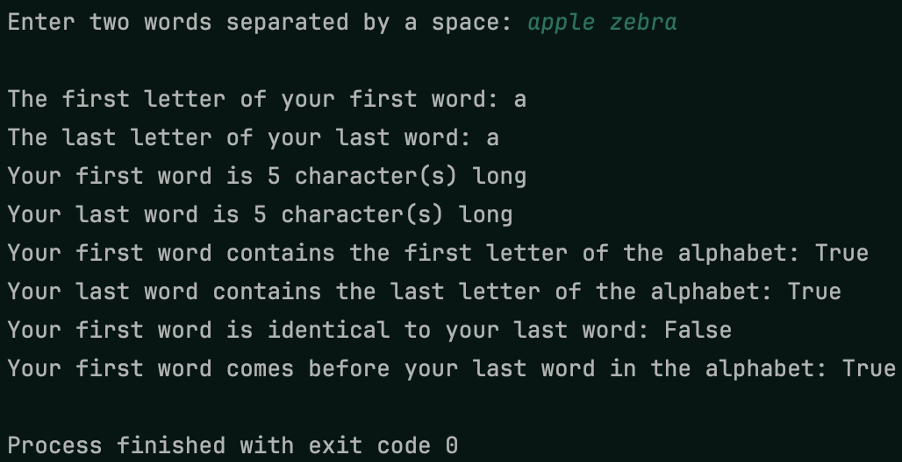
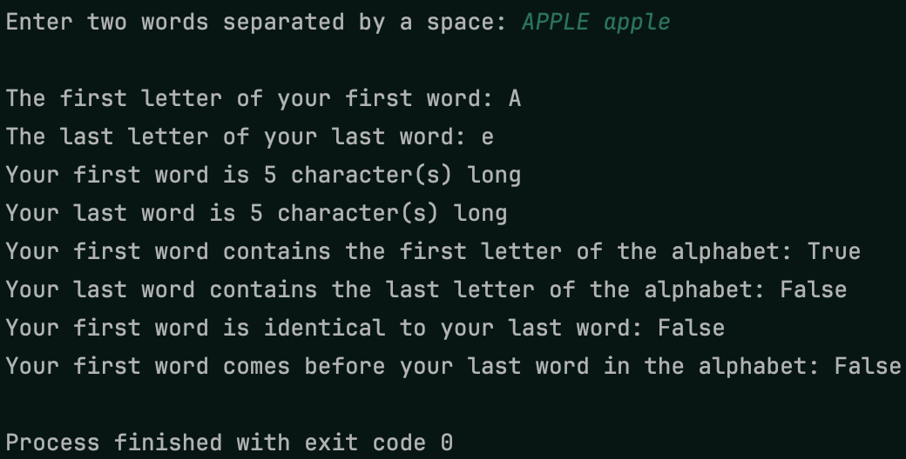
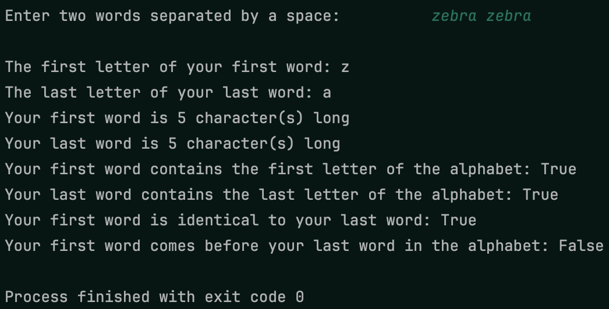

In this project, you’ll practice what you learned about working with strings to report information about words a user enters! You’ll also do a little bit of parsing to get two words with one input! Example output is shown below. While the words can change, what is reported should be the same.
Make sure to strip the user’s input so extra whitespace doesn’t cause
problems! Also think about whether a particular report requires case
sensitivity or case insensitivity! You should also practice using a
multiline string literal by using one call to print for the
output!
 Example output 1
 Example output 2
 Example output 3